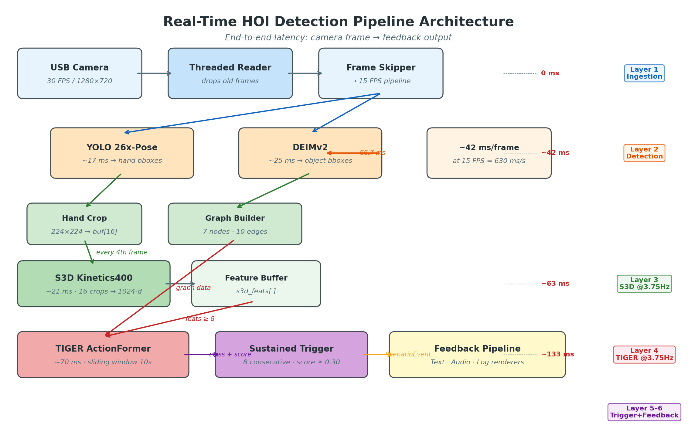
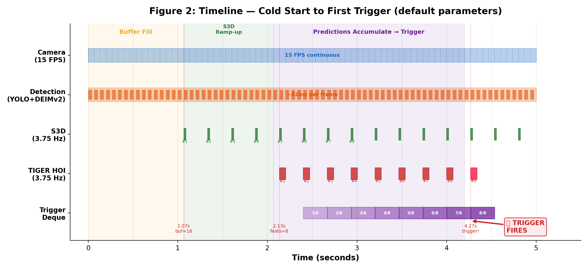
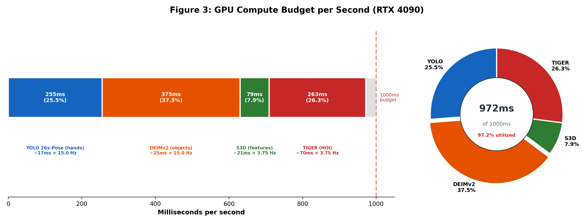
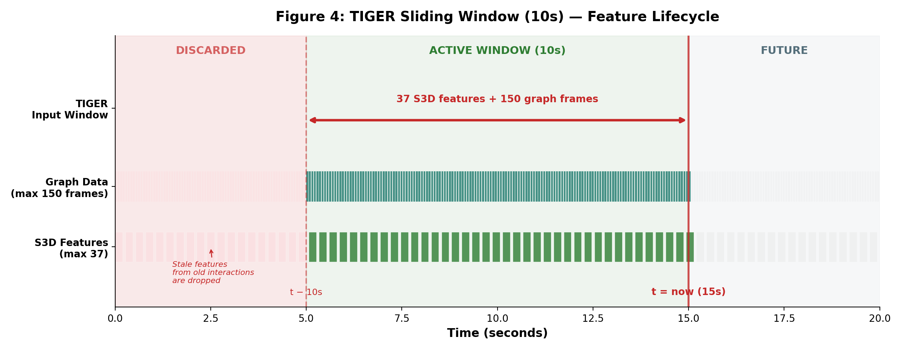
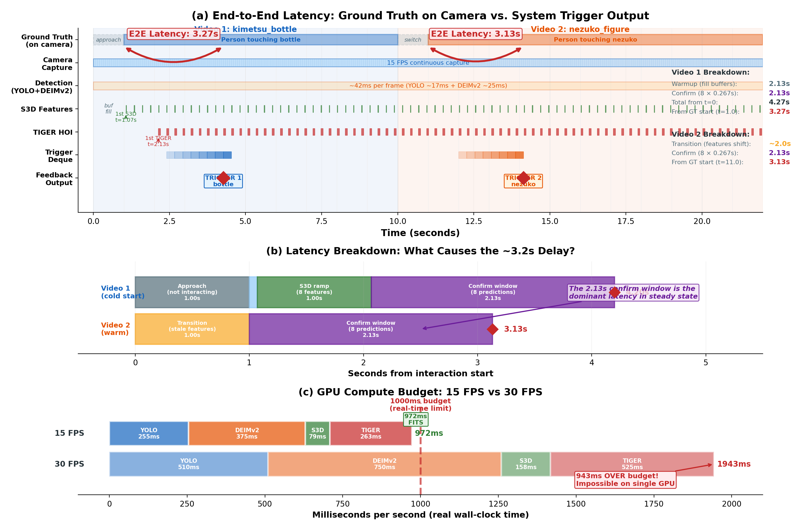
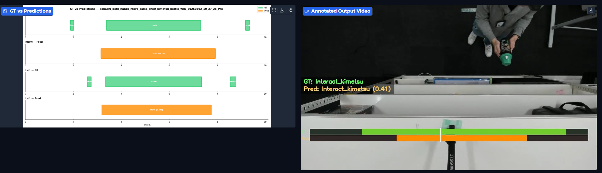

5-Layer Human-Object Interaction Pipeline on RTX 4090 at 15 FPS
Overview
A real-time human-object interaction detection system built for retail IP pop-up shops. The platform ingests live camera feeds at 15 FPS and runs a 5-layer pipeline — from YOLO pose estimation and DEIMv2 object detection, through S3D spatiotemporal features, to TIGER graph-based interaction classification — all within a 97.2% GPU compute budget on a single RTX 4090.
Architecture
5-layer real-time pipeline: Ingestion (0ms overhead), Detection (~42ms/frame), S3D feature extraction at 3.75 Hz, TIGER interaction classification, and sustained trigger with feedback.

Boot Sequence
From power-on to first trigger in 4.27 seconds. The timeline traces how each layer progressively fills its buffer: camera frames accumulate, detection begins, S3D ramps up feature extraction, predictions fill the trigger deque, and the system fires.

Performance
At 15 FPS on an RTX 4090, the full pipeline consumes 972ms of the available 1000ms budget per second — 97.2% GPU utilization with zero frame drops. DEIMv2 takes the largest share at 37.5%, followed by TIGER at 26.3%.

Sliding Window
TIGER operates over a 10-second sliding window containing 37 S3D features and 150 graph frames. Stale features from completed interactions are discarded as the window advances, keeping memory bounded and predictions focused on the current interaction context.

Latency
The system achieves ~3.2 seconds end-to-end latency from ground truth event on camera to system trigger output. The analysis includes a latency breakdown by pipeline stage, and a comparison showing that 30 FPS would exceed the GPU budget at 1943ms per second.

Demo
Side-by-side comparison of ground truth labels against system predictions, with annotated video output showing real-time confidence scores overlaid on the camera feed.

Impact